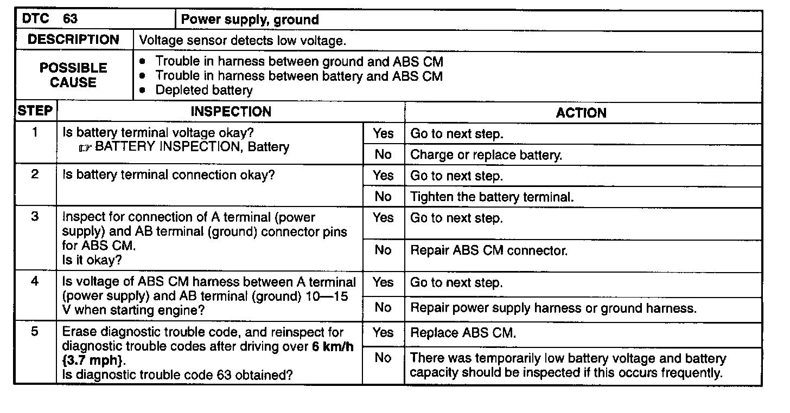

Operation CHARM
: Car repair manuals for everyone.
Home
>>
Mazda
>>
1999
>>
MX-5 Miata L4-1.8L DOHC
>>
Repair and Diagnosis
>>
A L L Diagnostic Trouble Codes ( DTC )
>>
Testing and Inspection
>>
Manufacturer Code Charts
>>
Antilock Brakes /Traction Control System
>>
DTC 63
DTC 63

Caution:
When attaching the tester lead to the terminal of the ABS CM harness connector, the SST must be used.